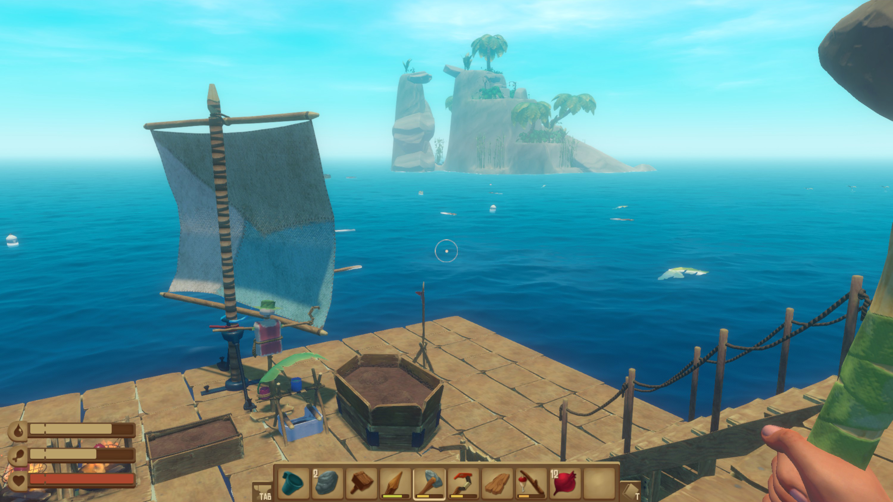
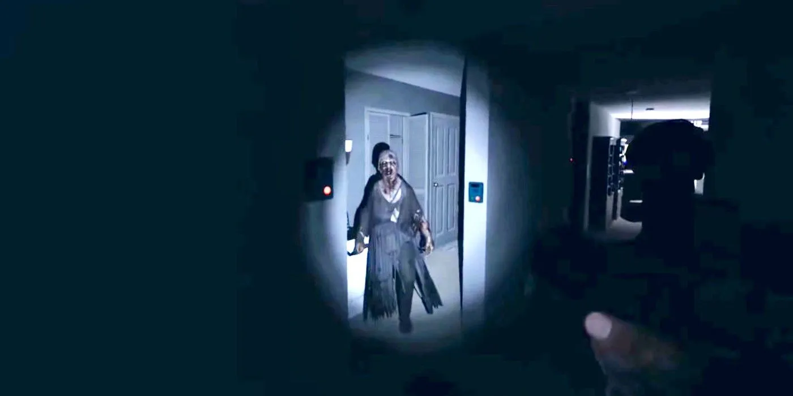

Het meeste van mijn vrije tijd besteed ik aan het spelen van Stardew Valley. Een 2D sandbox spel. Ik ben in januari dit jaar begonnen met spelen toen mijn vriendin het aan mij gaf als een verjaardags cadeau. In het begin speelden we veel samen, maar daarna ben ik eigen wereld gestart waar ik veel in bezig was in de vakanties. Na een tijdje begon het saai te worden omdat je veel het zelfde moet doen elke dag. een paar maanden later ben ik toch maar weer een nieuwe wereld gestart waar ik deze keer veel plezier mee had. Ik speel nog steeds in die wereld met nu ongeveer 50 uur speel tijd in die wereld alleen. Er zijn gelukkig ook mensen die een speciale wiki hebben gemaakt voor het spel. Klik hier om naar de wiki te gaan.

Maar, Stardew is niet het enige spel dat ik graag speel. Raft is er ook een. Dit spel gaat over een... nou... vlot in de oceaan waar je op staat. In het spel moet je materialen uit de oceaan vissen met je haak. Met die materialen kan je verschillende voorwerpen maken. Ook zijn er eilanden waar je makkelijk veel dingen kan krijgen. Uiteindeijk is er een verhaal in het spel wat je kan volgen. Je moet dan naar verschillende plaatsen zoals een cruise schip of een eiland vol met beren. Van die plekken krijg je informatie van wat er allemaal speelt. Wat misschien op kan vallen is dat je de enige persoon bent, nja behalve bij sommige verhaal plekken waar wel mensen zijn waar je mee kan praten. Soms kan het spel er wat eng uit zien, maar horror is het zeker niet. Ik heb dit spel best wel recent gekocht en nog niet zo heel lang gespeeld. Klik hier om de Raft Steam website te bekijken.
Ja hoor, toch maar een horror spel er tussen doen. Echt een geweldig spel en het wordt steeds beter en enger. In dit spel ben je een 'ghost hunter' je gaat naar verschillende huizen en gebouwen en probeerd daar de geest te vinden. Dat doe je dan natuurlijk met de tools die je kan kopen met het geld dat je verdiend na elke missie. Helaas kan je ook dood gaan in het huis/gebouw. Want de geest kan ook aanvallen, dan kan je verstoppen of weg rennen. Het is een multiplayer spel maar het kan ook alleen. Multiplayer is wel leuker. Klik hier om de Phasmophobia Steam website te bekijken.
